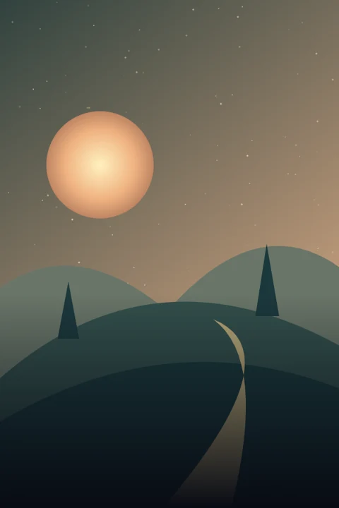

01 / YOUR LIBRARY
Organised your way.
Bring your folders, make channel stacks, and pin your favourites. Pick your grid. Find your rhythm.
1080pThe Quiet Orbit
1080pLast Light
1080pThe Silent City

1080pAlmost TomorrowTry the layout controls · 2 columns